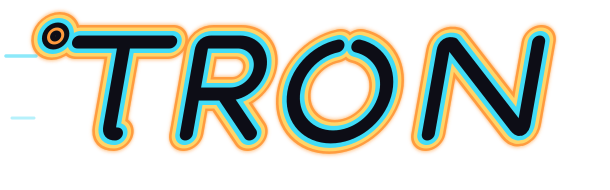

WorkLog
在同一個工作空間記錄每日工作、工時、進度與結案結果。
個人工作管理 · AI 知識工作空間

TRQN 是一套 AI 工作管理平台，整合 WorkLog、Google Drive 與 AI 知識管理。
使用 Google 帳號安全登入，在 WorkLog 記錄工作，並只在授權後匯入你明確選取的 Google Drive 文件，進行 AI 分析與知識整理。
專為個人工作管理與 AI 協作設計，讓 Google 登入、工時紀錄、文件理解與知識整理在同一個安全工作空間中自然銜接。
功能
在同一個工作空間記錄每日工作、工時、進度與結案結果。
使用單一 Google 身分安全進入 TRQN。
授權後，只匯入使用者明確選取的單一文件。
Mr. KM 分析確認後的工作內容，整理成可重複使用的知識。
在清楚的存取邊界下管理工作紀錄與指定的知識來源。
Designed for trust
After you authorize Google Drive, access is limited to files you explicitly choose through Google Picker.
Drive files are read for analysis; TRQN does not modify, delete, or share them.
Built for individual work management and AI-assisted knowledge organization.